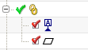

In the Part Navigator, expand the Query Results View node.

Under the Query Results View, select the Datum Feature Symbol A feature.
Toward the bottom of the Part Navigator, expand the Dependencies group.
Completely expand the Datum Feature Symbol A node and note that the face Face of COPY_BODY_CUT(9) is associated to the Datum Feature Symbol A.
Click the Dependencies header to close the group.